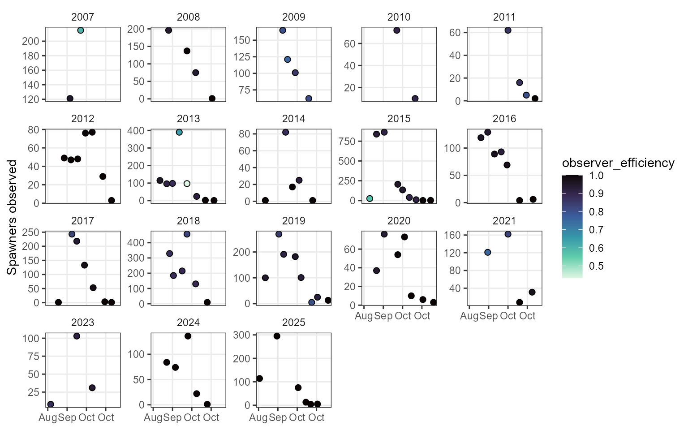
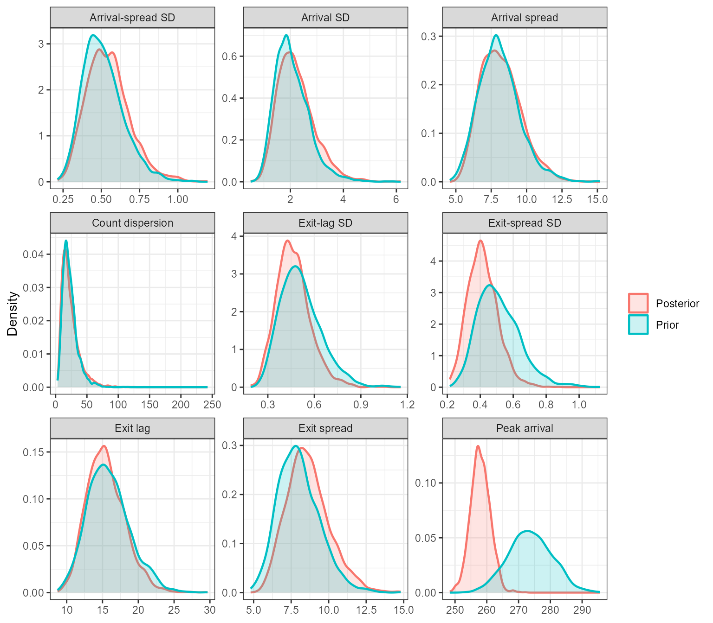
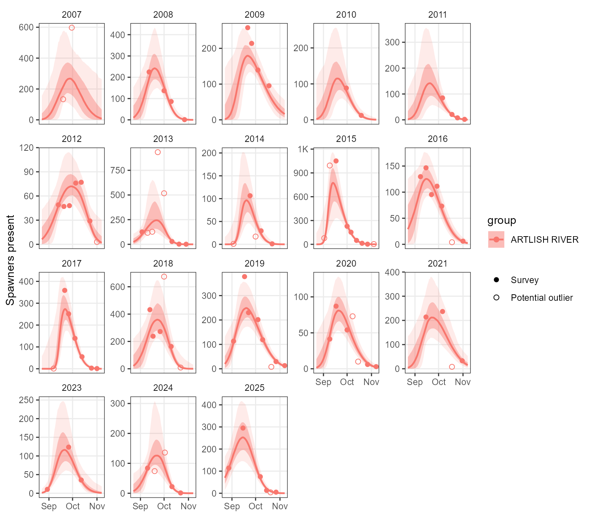
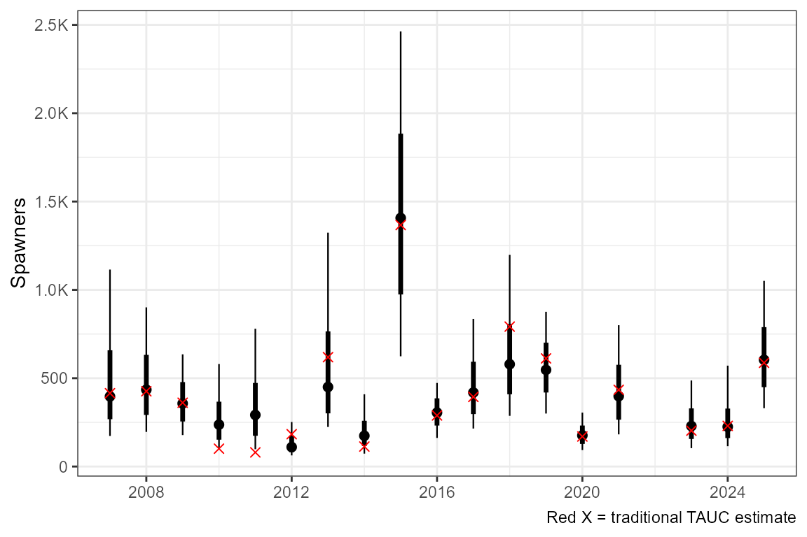
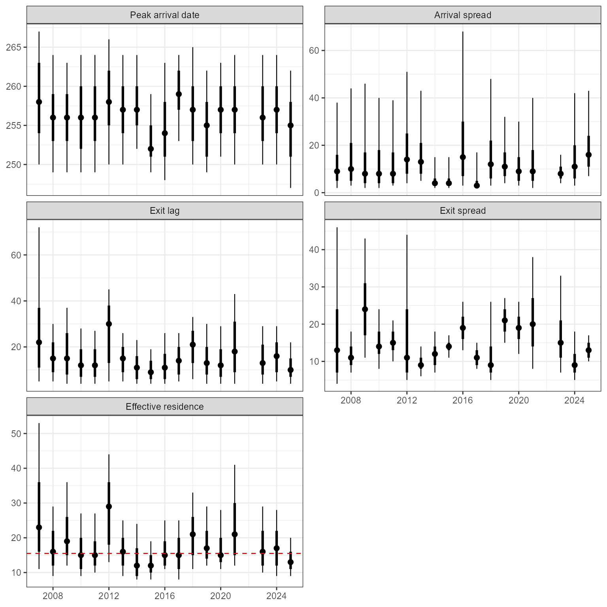

Getting Started with spawnBayes: A Single-Population Analysis
Source:vignettes/getting-started.Rmd
getting-started.Rmd
library(spawnBayes)
library(ggplot2)
library(dplyr)
library(lubridate)
knitr::opts_chunk$set(
collapse = TRUE,
comment = "#>",
warning = FALSE,
message = FALSE
)Introduction
spawnBayes estimates salmon spawner abundance and run timing from repeated live-count surveys. Unlike traditional area-under-the-curve approaches, spawnBayes estimates abundance, run timing, and their associated uncertainty while allowing residence time to vary among years.
The underlying methodology is described in Thompson et al. (2026).
Additional features introduced after Thompson et al. (2026) include support for survey-error groups, allowing separate observation-dispersion parameters to be estimated for different survey types or quality classes, and an optional robust observation model that reduces the influence of anomalous survey counts.
This vignette demonstrates a complete analysis using Chinook salmon
survey data from the Artlish River, British Columbia. The Artlish River
data are drawn from the example dataset nvi_chinook, which
is included with spawnBayes.
Although only a single group is analysed in this vignette, spawnBayes also supports analyses involving multiple groups. See Multi-Population Analyses in spawnBayes for an example based on the same dataset. A group is the unit for which abundance and run timing are estimated independently. Depending on the application, groups may represent reaches, streams, rivers, populations, index areas, or other biologically meaningful assessment units.
Multi-group analyses are covered in a separate vignette.
Workflow
A typical spawnBayes analysis consists of:
- Preparing survey observations.
- Validating the data structure.
- Fitting the Bayesian model.
- Evaluating diagnostics.
- Estimating abundance and run timing.
Example data
Load in the example dataset and inspect it. The model requires a date column and a spawner_counts column. Optional observer_efficiency, coverage, and survey_error_group columns can be supplied. Observer efficiency and coverage are used to account for imperfect detection when relating observed survey counts to the estimated number of spawners present. The survey_error_group column allows separate observation-dispersion parameters to be estimated for different survey types or quality classes.
In this example, survey dates have already been converted to Date format and correction factors have been supplied as proportions. The validation step checks data integrity, standardizes optional fields, and identifies potential issues such as sparse sampling or evidence of multiple run peaks.
data("nvi_chinook")
artlish <- nvi_chinook |>
dplyr::filter(
group == "ARTLISH RIVER"
)
summary(artlish)
#> date stream group spawner_counts
#> Min. :2007-09-20 Length:98 Length:98 Min. : 1.00
#> 1st Qu.:2013-09-12 Class :character Class :character 1st Qu.: 10.00
#> Median :2016-10-02 Mode :character Mode :character Median : 70.50
#> Mean :2017-01-05 Mean : 98.79
#> 3rd Qu.:2020-06-24 3rd Qu.:121.00
#> Max. :2025-10-28 Max. :863.00
#> observer_efficiency survey_error_group
#> Min. :0.433 Length:98
#> 1st Qu.:0.900 Class :character
#> Median :0.951 Mode :character
#> Mean :0.927
#> 3rd Qu.:1.000
#> Max. :1.000Validate data
The first step is to validate and standardize the input data. This converts the dates into their proper format and converts observer efficiency and coverage to proportions if they were provided as percentages. Validation may generate warnings if missing correction factors are supplied or if some years show potential evidence of multiple run peaks.
artlish <- validate_data(artlish)
summary(artlish)
#> date stream group spawner_counts
#> Min. :2007-09-20 Length:98 ARTLISH RIVER:98 Min. : 1.00
#> 1st Qu.:2013-09-12 Class :character 1st Qu.: 10.00
#> Median :2016-10-02 Mode :character Median : 70.50
#> Mean :2017-01-05 Mean : 98.79
#> 3rd Qu.:2020-06-24 3rd Qu.:121.00
#> Max. :2025-10-28 Max. :863.00
#> observer_efficiency survey_error_group coverage
#> Min. :0.433 HIGH :74 Min. :1
#> 1st Qu.:0.900 LOW : 2 1st Qu.:1
#> Median :0.951 MED : 9 Median :1
#> Mean :0.927 UNKNOWN:13 Mean :1
#> 3rd Qu.:1.000 3rd Qu.:1
#> Max. :1.000 Max. :1Survey observations
Now plot the raw survey counts by date in each year.
ggplot(artlish |> mutate(year = year(date), day = yday(date)),
aes(x = day, y = spawner_counts, fill = observer_efficiency))+
geom_point(pch = 21, size = 2) +
facet_wrap(~year, scales = "free_y")+
theme_bw() +
theme(
strip.background = element_blank(),
panel.grid.minor = element_blank()
) +
scale_y_continuous(
labels = scales::label_number(
scale_cut = scales::cut_short_scale()
),
name = "Spawners observed"
) +
scale_x_continuous(
labels = function(x)
format(
as.Date(x, origin = "2023-12-31"),
"%b"
),
name = NULL
)+
scale_fill_viridis_c(option = "G", direction = -1)
Fit the model
spawnBayes estimates annual run timing and abundance jointly across years. In this single-group example, information is shared among years through a hierarchical model, improving estimation in years with sparse survey data.
By default, spawnBayes fits a robust observation model that allows a small proportion of surveys to arise from a higher-variance observation process. This reduces the influence of unusual surveys on abundance and run-timing estimates. The feature can be disabled using outlier_model = FALSE.
The settings used in this vignette are intended to keep computation time reasonable. For applied analyses, users should always examine the diagnostic output and increase the number of iterations when recommended. Even so, the model may require several minutes to fit.
fit <- fit_spawner(artlish, iter_warmup = 500, iter_sampling = 500, assumed_residence = 15.5, adapt_delta = 0.99, refresh = 0)
#> Running MCMC with 4 parallel chains...
#> Chain 1 finished in 92.7 seconds.
#> Chain 3 finished in 93.4 seconds.
#> Chain 2 finished in 93.9 seconds.
#> Chain 4 finished in 112.8 seconds.
#>
#> All 4 chains finished successfully.
#> Mean chain execution time: 98.2 seconds.
#> Total execution time: 113.2 seconds.Model diagnostics
The diagnostics() function summarizes several indicators
of MCMC sampling performance and model convergence.
diagnostics(fit)
#> converged quality divergences treedepth_hits max_rhat min_ess_bulk
#> 1 TRUE good 0 111 1.009 434
#> min_ess_tail recommendation
#> 1 878 Consider increasing max_treedepth.In this example, all diagnostic checks were acceptable. No divergent transitions were detected, no maximum tree-depth warnings were encountered, and the largest Rhat value was close to 1. Effective sample sizes for both bulk and tail regions of the posterior distribution were sufficient for reliable inference.
When fitting new datasets, users should pay particular attention to:
- Divergences: should be zero whenever possible.
- Tree depth hits: frequent hits may indicate that model settings should be adjusted.
- Rhat: values close to 1 indicate convergence, while values substantially greater than 1 suggest poor mixing among chains.
- Effective sample size (ESS): larger values indicate better estimation of posterior summaries.
The recommendation column provides a summary of whether additional model tuning or longer runs are required.
Prior-posterior comparisons
Prior-posterior comparisons are a useful diagnostic for understanding how much information the data contribute to parameter estimation. When using loosely informative priors, posterior distributions are often expected to be narrower than the priors while remaining largely consistent with them. Prior-posterior comparisons can help identify parameters that are strongly informed by the data and assess whether prior assumptions are reasonable.
prior_post_plot(fit)
Estimated run
The fitted curves represent the estimated number of spawners present through time. Shaded regions show the 66 and 95% credible intervals. Observed survey counts are shown as points. When the outlier model is enabled, open circles indicate surveys with posterior outlier probabilities exceeding 0.25. These surveys show greater conflict with the fitted run-timing and observation model than expected under the primary observation process. Survey observations are plotted after deterministic correction for observer efficiency and survey coverage to facilitate comparison with the estimated number of spawners present.
plot_run_curve(fit)
Outlier diagnostics
spawnBayes can identify surveys that deviate
substantially from the overall run-timing pattern. These observations
are not removed from the analysis; instead, the model estimates the
probability that they arise from a higher-variance observation process
and correspondingly reduces their influence on parameter estimation.
Surveys with elevated outlier probabilities may reflect counting errors, unusual survey conditions, inaccuracies in correction factors, or biological patterns that are not fully captured by the run-timing model. Elevated outlier probabilities do not necessarily indicate erroneous data. Rather, they identify observations that are difficult to reconcile with the fitted observation and run-timing processes.
Users are encouraged to inspect years containing surveys with high outlier probabilities and assess whether the fitted run-timing model is appropriate for estimating spawner abundance.
Abundance estimates
The abundance summary reports posterior median abundance estimates and credible intervals for each year. When residence time is supplied, traditional trapezoidal area under the curve (TAUC) abundance estimates are also reported, together with the percent difference between the posterior median abundance estimate and the corresponding TAUC estimate.
Two diagnostic indicators are included in the abundance table. The
multimodal column identifies years with evidence of
multiple major run-timing peaks, which may violate the model assumption
of a single seasonal peak. The n_outliers column reports
the number of surveys within each year having posterior outlier
probabilities greater than 0.25. These diagnostics should be interpreted
as indicators of potential model-data conflict rather than measures of
data quality.
| group | year | median | lwr_95 | lwr_66 | upr_66 | upr_95 | TAUC | pct_diff_TAUC | multimodal | n_outliers |
|---|---|---|---|---|---|---|---|---|---|---|
| ARTLISH RIVER | 2007 | 397 | 173 | 268 | 658 | 1115 | 415 | -4.3 | FALSE | 2 |
| ARTLISH RIVER | 2008 | 435 | 196 | 292 | 632 | 901 | 426 | 2.1 | FALSE | 0 |
| ARTLISH RIVER | 2009 | 357 | 178 | 255 | 478 | 635 | 361 | -1.1 | FALSE | 0 |
| ARTLISH RIVER | 2010 | 237 | 97 | 152 | 367 | 580 | 101 | 134.7 | FALSE | 0 |
| ARTLISH RIVER | 2011 | 292 | 98 | 174 | 473 | 780 | 80 | 265.0 | FALSE | 0 |
| ARTLISH RIVER | 2012 | 110 | 63 | 81 | 172 | 252 | 183 | -39.9 | FALSE | 1 |
| ARTLISH RIVER | 2013 | 450 | 224 | 301 | 765 | 1324 | 619 | -27.3 | FALSE | 4 |
| ARTLISH RIVER | 2014 | 174 | 73 | 116 | 259 | 409 | 113 | 54.0 | FALSE | 2 |
| ARTLISH RIVER | 2015 | 1407 | 624 | 974 | 1884 | 2463 | 1367 | 2.9 | FALSE | 3 |
| ARTLISH RIVER | 2016 | 305 | 162 | 232 | 386 | 473 | 289 | 5.5 | FALSE | 1 |
| ARTLISH RIVER | 2017 | 419 | 215 | 297 | 593 | 836 | 394 | 6.3 | FALSE | 1 |
| ARTLISH RIVER | 2018 | 579 | 287 | 409 | 807 | 1198 | 792 | -26.9 | FALSE | 2 |
| ARTLISH RIVER | 2019 | 547 | 300 | 419 | 701 | 876 | 612 | -10.6 | FALSE | 1 |
| ARTLISH RIVER | 2020 | 176 | 93 | 128 | 232 | 305 | 170 | 3.5 | FALSE | 2 |
| ARTLISH RIVER | 2021 | 398 | 182 | 265 | 576 | 800 | 434 | -8.3 | FALSE | 1 |
| ARTLISH RIVER | 2023 | 229 | 104 | 156 | 329 | 487 | 203 | 12.8 | FALSE | 0 |
| ARTLISH RIVER | 2024 | 225 | 115 | 161 | 328 | 571 | 230 | -2.2 | FALSE | 2 |
| ARTLISH RIVER | 2025 | 604 | 330 | 449 | 789 | 1051 | 587 | 2.9 | FALSE | 1 |
The abundance plot shows the median (point) as well as the 66 and 95% posterior credible intervals. The red x shows the estimate based on trapezoidal area under the curve, with an assumed 15.5 day residence (survey life).
plot_abundance(fit)
# Timing estimatesRun timing summaries describe the estimated distribution of spawner arrival dates, residence, and exit lag in each year.
plot_timing(fit)
Conclusions
spawnBayes provides a framework for estimating salmon spawner abundance and run timing from repeated live-count surveys while accounting for uncertainty in both the observation and process components of the model. This vignette focused on a single population. The vignette Multi-Population Analyses in spawnBayes demonstrates how multiple groups can be analysed jointly while estimating abundance separately for each group.
Citation
The methods implemented in spawnBayes are described
in:
Thompson, P. L., Akenhead, S. A., and Louie, C. (2026). Estimating spawning salmon abundance from visual surveys: a hierarchical model of arrival and exit dynamics. Canadian Journal of Fisheries and Aquatic Sciences, 83, 1-13. https://doi.org/10.1139/cjfas-2026-0029
Users are encouraged to cite both the package and the accompanying manuscript when using spawnBayes in scientific publications.